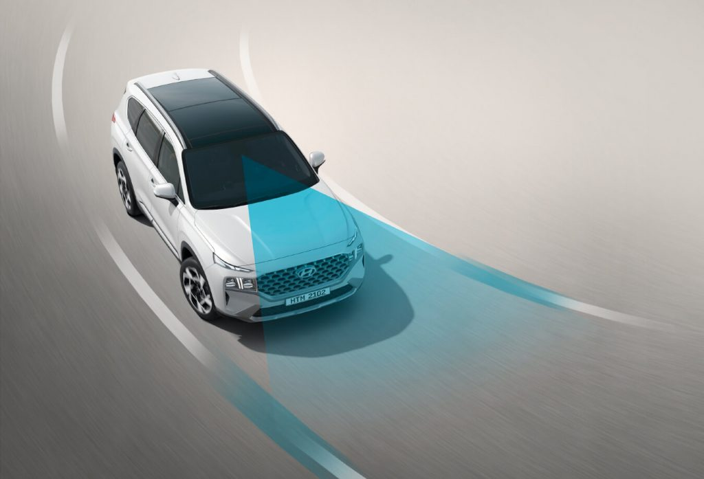

Hệ thống an toàn chủ động trên xe Hyundai SantaFe
quynhng
19 Tháng chín, 2024
Tin Tức Mới
0 Comment
HYUNDAI SANTA FE 2019, MẪU XE AN TOÀN BẬC NHẤT TRONG PHÂN KHÚC.
– Đạt chỉ số an toàn 5 sao EURO ANCAP, được ANCAP đo đạc và chứng nhận hàng năm
– Đạt giải Top Safety Pick + ( Mức an toàn cao nhất tại Mỹ ) Được Viện Bảo hiểm An toàn Giao thông Mỹ IIHS trao tặng
Để có được các giải thưởng này, Hyundai Santafe 2019 đã được trang bị hàng loạt các tính năng an toàn chủ động và bị động trên xe, nhằm mục đích đem đến sự an toàn khi lái xe. Sau đây là 10 hệ thống an toàn chủ động có trên Hyundai Santa Fe tại thị trường Việt Nam:
1. HỆ THỐNG CÂN BẰNG ĐIỆN TỬ ESC
- Tính năng: Hệ thống này được sử dụng trên xe Hyundai Santafe với mục đích ổn định xe.
- Chức năng:Sử dụng một số tín hiệu được đưa về từ cảm biến ở bánh xe, vô lăng để điều chỉnh hệ thống phanh nhằm đem đến trạng thái cân bằng cho xe.
- Lợi ích:An toàn hơn khi lái xe trong tình trạng đường không tốt hay đang quẹo những cung đường gắt.
2. HỆ THỐNG KHỞI HÀNH NGANG DỐC HAC
- Tính năng: Hệ thống được trang bị trên xe Hyundai SantaFe với mục đích đảm bảo xe không bị trôi ngược khi đang leo dốc, bằng việc duy trì xe trên dốc trong khoảng thời gian để chuyển từ chân phanh sang chân ga.
- Chức năng:Chức năng sẽ giữ cho xe đứng yên trong vòng 3 giây khi tài xế nhả bàn đạp phanh.
- Lợi ích:Đảm bảo an toàn cho người sử dụng tránh được việc gây ra tại nạn, hay chết máy khi đang leo dốc.
3. HỆ THỐNG HỖ TRỢ XUỐNG DỐC DBC
- Tính năng: Đảm bảo tốc độ ổn định khi di xe Hyundai SantaFe chuyển xuống địa hình có dốc.
- Chức năng: Duy trì tốc độ ổn định với đoạn đường nhiều dốc ( khoảng 15 – 35km/h với bàn đạp ga mức nhỏ). Tự tắt chức năng khi xe di chuyển tốc độ lớn hơn 60km/h.
- Lợi ích:Đảm bảo việc xe di chuyển xuống dốc an toàn hơn.
4. HỆ THỐNG PHÂN BỔ LỰC PHANH EBD
- Tính năng:Được trạng bị nhằm mục đích phân bố lực phanh phù hợp cho từng bánh xe để đem lại quãng đường phanh tối ưu.
- Chức năng:Nhận tín hiệu từ các cảm biến trọng lượng tại bánh xe sau đó điều khiển lực phanh phù hợp cho tới từng bánh xe.
- Lợi ích:Lái xe an toàn hơn, đặc biệt kết hợp với hệ thống ABS.
5. HỆ THỐNG CHỐNG BÓ CỨNG PHANH ABS
- Tính năng:Hệ thống này được trang bị trên xe Hyundai SantaFe với mục đích hỗ trợ cho người lái có khả năng điều khiển tốt hơn trong tình trạng di chuyển trên đường trơn trượt vượt ngoài tầm kiểm soát.
- Chức năng: Sử dụng tín hiệu được gắn ở 4 bánh xe, để đánh giá tình trạng và điều khiển sự trượt đảm bảo an toàn khi lái xe.
- Lợi ích:Một lợi ích khác, ABS có thể giảm quãng đường phanh (tùy trường hợp).
6. HỆ THỐNG HỖ TRỢ LỰC PHANH KHẨN CẤP BA
- Tính năng:Hỗ trợ lực phanh trong tình huống xảy ra cần phanh khẩn cấp nhưng người lái xe không cung cấp lực đủ.
- Chức năng:Những cảm biến của hệ thống hỗ trợ lực phanh khẩn cấp BA sẽ phát hiện ra người lái xe có hành động phanh gấp từ đó trợ giúp đẩy nhanh quá trình diễn ra phanh. Cùng lúc này bộ xử lý trung tâm sẽ kích hoạt van điện cung cấp khí nén giúp tăng sức năng cho chân phanh. Khi phanh đủ lực sẽ giúp xe ô tô dừng lại kịp thời, trước khi xảy ra va chạm.
- Lợi ích:Hệ thống giúp cho quãng đường phanh được rút ngắn, hạn chế tối đa tai nạn do lỗi đạp phanh thiếu lực gây ra.Hệ thống hỗ trợ phanh khẩn cấp cũng giúp cho người lái xe kiểm thời kiểm soát tốt trong các tình huống nguy hiểm khẩn cấp.
7. HỆ THỐNG CẢNH BÁO ĐIỂM MÙ BSD
- Tính năng:Hệ thống này có vai trò theo dõi các vị trí bị khuất tầm nhìn xung quanh xe và cảnh báo người lái khi phát hiện có phương tiện di chuyển bên trong các vùng này.
- Chức năng:Gồm các bộ phát sóng điện từ gắn trên gương chiếu hậu, quanh thân xe hoặc cản sau có nhiệm vụ phát ra sóng điện từ khi xe đang di chuyển. Khi một chiếc xe phía sau hoặc bên hông tiến quá sát đến chiếc xe của bạn thì bộ phát sóng điện từ sẽ nhận ra và gửi tín hiệu về bộ điều khiển. Hệ thống sẽ cảnh báo bạn bằng cách phát âm thanh, hình ảnh sẽ hiện thị lên màn hình trung tâm cho dễ quan sát.
- Lợi ích:Hỗ trợ các tài xế quan sát được những điểm mù, nắm bắt và xử lý các tình huống kịp thời, an toàn.
8. HỆ THỐNG CẢM BIẾN HỖ TRỢ ĐỖ XE
- Tính năng:Hệ thống được kích hoạt khi lựa chọn số lùi, ấn nút trên bảng táp-lô hay khi lái xe từ từ và xe phát hiện bạn đang tiến gần đến vật cản. Càng đến gần, tiếp “bíp” càng nhanh và rõ hơn. Khi tiếng “bíp” phát ra liên tục, bạn nên dừng xe lại, bởi đó là khoảng cách gần nhất có thể trước khi đâm vào vật nào đó.
- Chức năng:Cảm biến đỗ xe có thể được gắn vào phía trước và phía sau của xe, thường ở cản xe. Khi đỗ xe, chúng đo lường khoảng cách của xe với chiếc xe khác hoặc vật cản bên cạnh chỗ đỗ xe và phát ra âm thanh “bíp” bên trong cabin nhằm cảnh báo người lái rằng họ đang đến gần vật cản.
- Lợi ích:Giúp người lái biết các góc của xe đang ở đâu, thuận tiện cho việc đỗ xe trong những chỗ chật hẹp.
9. GƯƠNG CHỐNG CHÓI TỰ ĐỘNG ECM
- Tính năng:Khắc phục tình trạng chói mắt do đèn của xe di chuyển phía sau thường chiếu thẳng vào các gương hậu của ô tô phía trước gây chói mắt khi di chuyển vào ban đêm.
- Chức năng:Nhiệm vụ nhận diện ánh sáng chói của loại gương này do cảm biến ánh sáng. Vậy nên, gương chống chói ngay lập tức hoạt động khi cảm biến phát hiện nguồn sáng xung quanh hay ánh sáng trực tiếp rọi vào với cường độ mạnh khi trời tối.
- Lợi ích:Gương trở nên tối hơn, giúp tài xế khắc phục tình trạng chói mắt và tập trung lái xe. Khi ánh sáng chói hết, gương sẽ dần sáng trở lại như thông thường.
10. CAMERA LÙI
- Tính năng:Là một thiết bị camera ghi hình chuyên dụng, sử dụng trên các phương tiện giao thông nhằm quan sát diễn biến lưu thông ở khu vực sau xe.
- Chức năng:Khi tài xế lùi thiết bị này khi kết hợp với bộ phận cảm biến lùi trong xe hơi nhằm hỗ trợ hoạt động lùi và tiến xe khi đỗ, đậu xe, cũng như cấp lề an toàn khi xe dừng.
- Lợi ích:Camera lùi có thể mang đến cho người lái sự tiện ích và an toàn. Chỉ trong nháy mắt, hệ thống camera lùi có thể cảnh báo các vật cản xuất hiện phía sau xe – những vật cản này không thể nhìn thấy thông thường qua gương chiếu hậu.